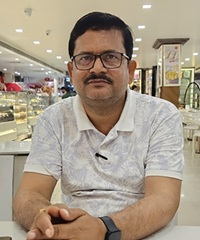

About Us

Founder: N. K. NIRALA (GUDDU SINGH)
Founded in 2019, Tarun ENTERPRISES is a leading railway construction firm based in India. With a dedicated team of engineers and field professionals, we specialize in delivering quality railway infrastructure projects with precision and safety.
We have earned a solid reputation as trusted railway contractors, combining modern equipment, experienced manpower, and a commitment to timely delivery. Whether it’s track laying, maintenance, or project management, we build with integrity and excellence.